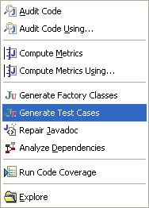
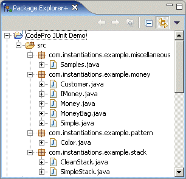
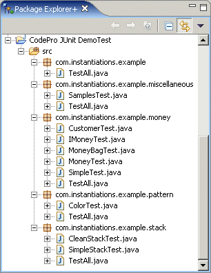
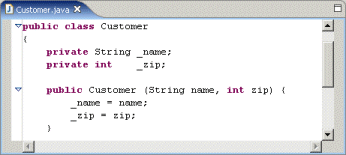
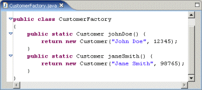
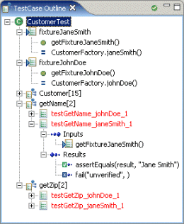
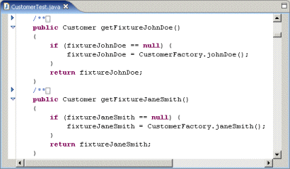
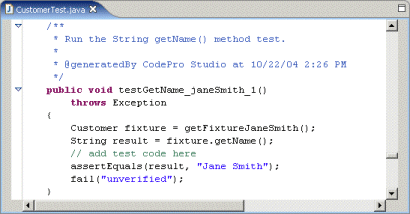

JUnit Test Case Generation
|  |
The CodePro JUnit Test Case Generation
facility allows you to automate the creation of comprehensive JUnit
regression test cases. Given an input class, the tool creates a
corresponding test class complete with multiple test methods for each
input class method. The tool analyzes each method and input argument
with the goal of generating test cases that exercise each line of code
(the CodePro Code
Coverage facility can provide feedback on how good your test
cases are). |
|||
|
|
||||
Invoking the Test Generator
The code generator is invoked from the Generate Test Cases menu item on the CodePro Tools submenu in either the Package Explorer or the Resource views. The menu item does not prompt the user for any additional information; all of the configuration options are currently available on the CodePro > JUnit preferences pages.
The current selection is used to derive a list of compilation units as follows. Any compilation unit that is selected is added to the list. Any compilation unit defined (directly) in a selected package is included in the list (whether or not it is explicitly selected). Finally, any compilation unit in either a source folder or project that is selected is included in the list. This list of compilation units is then used in the next step.
Target Selection
Given the list of selected compilation units, the next step is to identify a list of target types. A target type is a type for which a test case will be generated. Within each target type, we then identify a set of target methods and constructors. A target method (or constructor) is a method for which one or more test methods will be generated.
The CodePro > JUnit > Code Under Test preferences allow the user to select which types, and which methods within those types will have test code generated for them. The user can separately control test code generation based on the visibility of the program element and the kind of element.
We are not currently supporting generating tests for private elements, though that could potentially be added in the future if there is demand for such a feature. (This probably makes more sense for private methods and constructors than for private types.)
We divide types into three categories (interfaces, abstract classes, and concrete classes) and we divide type members into three categories (static methods, constructors, and instance methods) in order to allow fine-grained selection of targets. We do not currently support generating test code for either fields or initializers, nor do we generate test code for any types other than the primary type (including secondary types, inner types, or nested types).Location of Generated Code
The CodePro > JUnit > Generated Code preferences allow the user to specify the location in which the compilation units will be generated. The user can specify the name of the project, source folder, package, and test case.
These locations are specified as templates with the following variables being available:
- project_name - the name of the project containing the target class
- source_folder - the name of the source folder containing the target class
- package_name - the name of the package containing the target class
- class_name - the name of the target class
Likewise, given the "CodePro JUnit Demo" project shown on the left below, the test case generator would generate the "CodePro JUnit DemoTest" project shown on the right below. For every input class, a corresponding test class is generated. Optional test suites can also be generated.
 
Generated Test Methods
A test case is a class that implements, either directly or indirectly, the class junit.framework.TestCase. Such a class consists of three separate groups of members: framework methods such as setUp, fields and methods used to manage the test fixtures (discussed in the next section), and, most importantly, the test methods themselves (also discussed in a later section).
The CodePro > JUnit > Generated Code > Methods preferences allows the user to control how many test methods can be generated, whether test methods are marked as being unverified, and which framework methods will be generated within a test case.
The test method count specifies the maximum number of test methods that will be generated for each target method or constructor. Fewer methods will be generated if the method can be thoroughly tested with fewer methods.
Because the test code generator is not perfect, it is strongly recommended that all generated test methods be marked as needing to be verified for correctness. The third group of options controls whether this will be done and how. Two choices are currently available. The first inserts an invocation of the method fail into the code to ensure that the method will fail when used, forcing the developer to verify the method. The second inserts a comment into the code to indicate that the method should be verified. Unverified test methods are highlighted in red in the JUnit Test Case Outline view.
The user can optionally request the generation of a constructor for the test case (which is no longer needed by the JUnit framework but might be desired for backward compatibility), a setUp method, a tearDown method, and a main method. If a main method is generated, the code in its body will create a test runner, and the user can choose which style of test runner should be used.
Generated Test Comments
The CodePro > JUnit > Generated Code > Comments preferences allow the user to control how the generated code is commented.
There are two kinds of comments that can be generated: Javadoc and inline. Javadoc comments, if selected, get generated for the test case class and all of its members. The options under the top-level check box control the class Javadoc, including whether a copyright notice is included and whether the author and version tags are generated. The author name is taken from the System's user.name property. The version tag assumes CVS.
The copyright text is specified as a template with the following variable being available:
year - the four digit integer representing the current year in the Gregorian calendar.
Execution
In order to determine the expected result of a target method, the code generator executes that method. The CodePro > JUnit > Test Execution preferences controls the code generator's response when the execution of a method throws an exception.
There are three options available. The first is to not generate any test methods that cause exceptions to be thrown. This is really only appropriate if the target code should not throw exceptions so that you know in advance that any such test methods would not be testing valid results.
The second option is to generate test methods that throw exceptions only when the exception was declared by the target method. In this case, the test method will wrap the invocation of the test method in an exception handler and only succeed if the exception is thrown.
The third option is to always generate test methods, even if an exception is thrown. Again, the invocation of the target method will be wrapped in an exception handler. This option is generally only useful if you want to generate tests for unchecked exceptions. One example of an unchecked exception that you might want to test for is the class AssertionError, which is thrown by the assert statement.Test Fixture Support
A test fixture is an object used to invoke an instance method. Test fixtures are, obviously, not needed for either static methods or constructors. The CodePro > JUnit > Generated Code > Fixtures preferences allow the user to control the generation of code related to test fixtures.
Test fixtures can either be generated as fields or on a test-by-test basis. If they are generated as fields, then the user can specify whether they want to create accessor methods for each field. When generated as fields, test fixtures show up in the JUnit Test Case Outline view.
The user can also specify where test fixtures are initialized. There are currently three options for where to place the initialization code: in the initializer for the field, in the accessor method (which is only an option if accessor methods are generated), or in the setUp method (which, again, is only an option if a setUp method is to be generated).As an example, assume that the test generator is generating test code for a singleton class whose instance is accessed using the static method getInstance. In this case, there would be a single test fixture for the instance methods. If the 'Generate test fixtures as fields' option is not selected, then the code for each test method would contain a direct call to the getInstance method, similar to the following:
public void testIsActive()
{
ConnectionManager fixture = ConnectionManager.getInstance();
boolean result = fixture.isActive();
assertEqual(result, true);
}
If the 'Generate test fixtures as fields' option is selected, then a field would be generated. With the default settings, an accessor would be created for the fixture and the initialization code would be placed within the accessor. In that case, the field would be defined as
ConnectionManager fixture1;
and the accessor method would be defined as
public ConnectionManager getFixture1()
{
if (fixture1 == null) {
fixture1 =
ConnectionManager.getInstance();
}
return fixture1;
}
The test method would then be generated as follows:
public void testIsActive()
{
boolean result = getFixture1().isActive();
assertEqual(result, true);
}
Test Method Generation
As nice as it is to generate all of the boiler-plate for a test case, the real value of the system is in the generation of test methods. Here's how test methods get generated. For each target method, the test generator
-
generates a list of values for the fixture (if the target method is an instance method) and each of the arguments,
-
determines which combinations of values to use to invoke the method,
-
computes the result of invoking the method,
-
figures out how to validate the result, and finally
-
generates one test method for each combination of values.
We'll look at each step in more detail in the following sections.
Generate Values
The test generator uses a number of heuristics to generate a list of values for a given argument. First, it analyzes the target method to try to determine how the parameter is used within the method and see whether that tells it anything about what values to use. For example, if an integer parameter is used in a switch statement, then it would use each of the values explicitly listed in non-empty case labels as well as some value that isn't in any of the case labels.
If it can't determine anything from analyzing the method, then it looks to see if the type of the parameter is well known. This includes primitive types as well as several non-primitive types such as String. For well known types, there is a list of default values.
For other classes of objects, as well as for test fixtures, it looks for zero-argument static accessor methods, constructors, and multi-argument static accessor methods, in that order, generating values for their arguments as necessary.
Determine Combinations
The number of combinations of all possible values for fixtures and arguments is usually too high to be practical, so the test generator uses rules for choosing a reasonable number of those combinations.
Compute the Result
Then, for each combination, the test generator computes the expected result of the method. This can either be a value, if the method returns normally, nothing, if the method has a return type of void, or an exception if the method throws an exception.
Validate the Result
If an exception is thrown, it is assumed that the method should throw an exception and the test method will be written to verify that the exception is thrown. If the method returns a value, then the test generator determines how to test the returned value. Some types can be checked directly, while other types require invoking accessing methods or fields to determine the state of the object. If the method does not return a value, then the state of the fixture is tested instead.
Generate Test Methods
Once we know the test fixture, argument values, and validation steps for each test method, generating the code for the test method is quite straightforward. The input values and expected results are also shown in the JUnit Test Case Outline view
Automatic Update
This CodePro > JUnit > Auto Update preferences allow you to specify that test classes should be updated whenever the target class is edited. When a target class is updated, new test methods will be added for any untested methods in the target class, but existing code will not be modified. This is true whether the existing code was previously generated or whether it was hand-written.
Design by Contract Support
One way to augment the Java source code to improve the quality of the generated code is to include design by contract information. Design by contract is an approach to software development that became somewhat formalized in Eiffel. The idea was to make explicit the contract between client code (code that would invoke some API) and the code being invoked. Specifically, we want to specify
- what must be true about an instance of a class in order for it to be in a consistent state (an invariant),
- what must be true before a method can be invoked (a precondition) including both the state of the object and the limitations on the values of the arguments, and
- what must be true after the method has returned (a postcondition) including both the state of the object and limitations on the returned value.
In Java, the support for design by contract takes two forms. The first is through the use of additional Javadoc tags. This approach is not standardized, but there are a few conventions that are more popular than others, and we support the more popular forms.
The second is through the use of the assert statement. This is only available in JDK 3.0 and later. Furthermore, it is somewhat ad-hoc both because the assert statement can be used for reasons other than to express contracts and because the interpretation of an assert statement is not always obvious. We take assert statements that occur at the beginning of a method to represent preconditions, and we take assert statements that occur at the end of a method to represent postconditions (even though they might represent invariants; we just can't tell the difference).The CodePro > JUnit > Design by Contract preferences allow the user to control the handling of the design by contract information.
There are three basic kinds of tags: invariants, preconditions, and postconditions. In all three cases, the tag is followed by text that must be in one of the following formats:
<booleanExpression>
( <booleanExpression> , <messageExpression> )
Invariants occur within the Javadoc for a class. There are two common forms for invariant tags: @invariant and @inv, both of which are recognized. The code in an invariant tag can refer to any visible types and to any fields or methods defined by the target class. The user can optionally specify that the invariants should be tested in every test method.
For example, if you had written a class representing a stack of integers in which the values on the stack were stored in an array named elements with an integer field named index whose value was the index of the slot one past the top of the stack, you might write an invariant like the following:
@invariant (index >= 0) && (index <= elements.length)
Both preconditions and postconditions occur within the Javadoc for methods and constructors. Preconditions are represented by the @pre tag; postconditions are represented by the @post tag. The code in preconditions can refer to everything an invariant can as well as the parameters for the method or constructor, with the exception that preconditions for constructors cannot refer to instance fields or methods (only static members).
For example, if you were writing a class to represent an employee, and you wanted to ensure that the employee's name was always a non-empty string, you might add a precondition to the setName method (whose String parameter is named newName) of the following form:
@pre newName != null && newName.length() > 0
In addition, the code for postconditions can contain a couple of special pieces of text. The text $result can be included in the postcondition for any method with a non-void return type to refer to the result of executing the method. Text of the form
$pre ( <type> , <expression> )
can also be included. This text is interpreted as a reference to the value of the expression (which must have the given type) prior to the invocation of the method. As an example, assume that we had a method that added 1 to the value of a field named counter. This method might have a postcondition of the form:
@post counter == $pre(int, counter) + 1
The user can optionally specify that the postconditions should be tested in every test method for the given target method.
Support for Factory Classes
|
Another way to augment the Java source code to improve the quality of the generated code is to define a factory class for some or all of the target classes. A factory class for a target class is a class that defines one or more factory methods, where a factory method is a static, zero-argument method that returns an instance of the target class. When a factory class can be found, the generator will use the factory methods to create instances of the target class. These instances will then be used as
|
For example, if you wrote a class named Customer that held two important pieces of information - the name and zip code - and the class had a single constructor taking a String argument and an integer argument, you might write a factory class like the following to ensure a reasonable selection of instances for testing:
 
The test generator would then create a test fixture is for each factory method.
 
Those fixtures are then be used in the actual test methods themselves.

A Generate Factory Classes command is available to generate which will generate initial factory classes for you.
As another example, if you wrote a class name Point that represented a two-dimensional point, and the class had a single constructor taking two integer arguments, you might write a factory class like the following to ensure a reasonable selection of instances for testing:
public class PointFactory
{
public static Point origin()
{
return new Point(0, 0);
}
public static Point xAxis()
{
return new Point(0, 3);
}
public static Point yAxis()
{
return new Point(5, 0);
}
public static Point firstQuadrant()
{
return new Point(7, 11);
}
}
The CodePro > JUnit > Factory Classes preferences allow the user to specify the location of the factory classes. The user can specify the name of the project, source folder, package, and factory class.
As with the destination options, these locations are specified as templates with the following variables being available:
- project_name - the name of the project containing the target class
- source_folder - the name of the source folder containing the target class
- package_name - the name of the package containing the target class
- class_name - the name of the target class
For example, given the default settings above, if test generator were looking for a factory class for the class junit.samples.money.Money located in the source folder src in a project named 'Samples', it would look for a class named junit.samples.money.MoneyFactory in the source folder src in a project named 'SamplesTest'.
Test Suite Generation
The CodePro > JUnit > Generated Code > Suites preferences allow the user to specify the generation of test suites. The user can specify whether test suites should be generated, and, if so, whether test suites should automatically include the tests in test suites defined in subpackages. The user can also specify the name used for test suites.